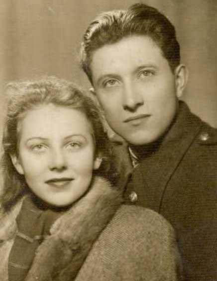
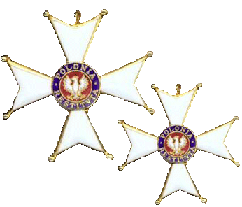
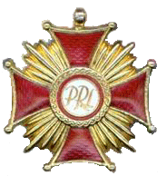
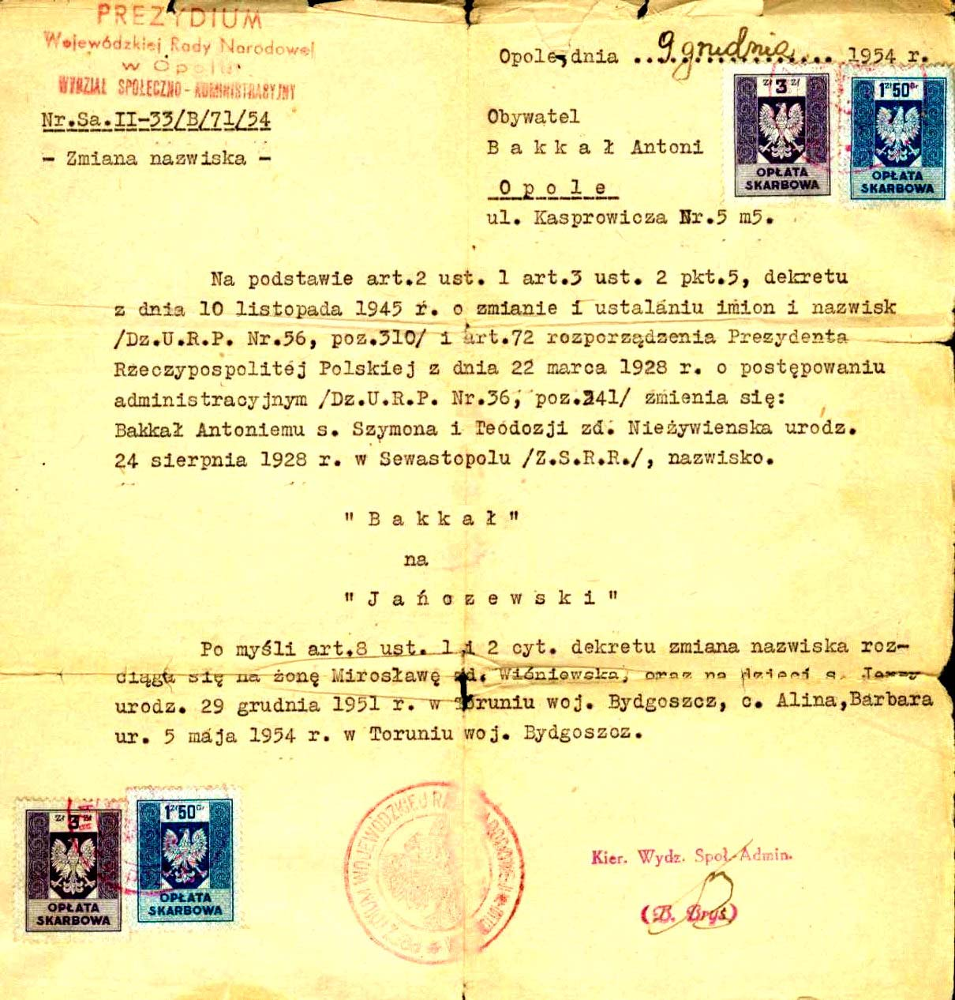
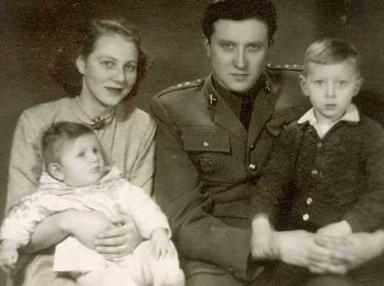
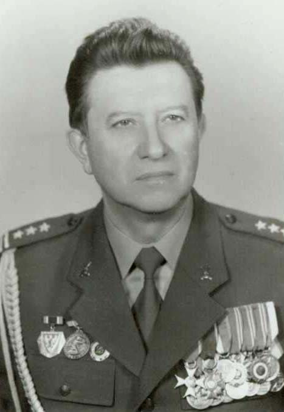
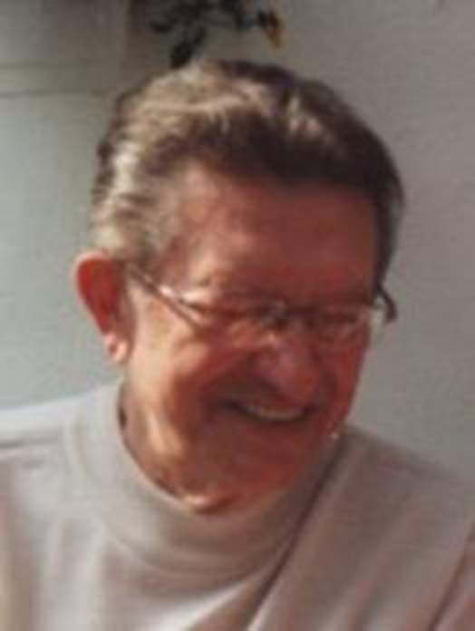

Янчевский (Баккал) Антоний (Анатолий) родился 24 августа 1928 года в Севастополе.
Родители:
отец - Баккал Солмон Лазаревич,
мать - Баккал (Неживенко) Феодосия Васильевна
Долгое время жил в Крыму - потом в Польше.
В 1949г. Окончил офицерское артиллерийское училище в Торуню (Польша). Доучивался в технических и военных ВУЗ-ах в Польше и военной арт. академии в Ленинграде.

В армии прослужил 42 года, исполнял командно - технические должности. Награжден орденами и медалями. Ушёл в отставку в 1989 году в звании полковника польской армии.

В 1950 году женился - жена: Мирослава Вишневская, экономист.
От этого брака родились дети:
сын - Янчевский Юрий (Ежи) в 1951 году,
дочь - Янчевская Алина в 1954 году.
Умер 2 ноября 2018 года.
По окончанию войны, после известия о гибели родителей, мы предпринимали усилия узнать, что же с ними произошло. Наверно, эти попытки были неумелые и мало интенсивны. Долгое время оставались без результатов. И вдруг, совершенно неожиданно, в апреле 1954 года получаем известие, будто родители живы и проживают в Бахчисарае! На мой запрос, в июле пришло от отца письмо, подтверждающее достоверность известия! Описать моих переживаний невозможно. Ощущение радости и счастья смешивалось с чувством стыда и виновности, что не сумел выяснить всего этого гораздо раньше. В 1956 году родители с внуком Вадимом, приехали на два месяца в Польшу. Сестра встречала их на границе в Бресте (Тересполю). Я своих родителей, после 15 летней разлуки, приветствовал лишь только в Познани, в вагонном купе. О чём шел разговор, сочинять не буду. Помню только, что сквозь слёзы не отрывал глаз от своих старичков, целовал мамины руки, нежно прижимался к отцу, и только слушал и слушал, всё время переводя взор с одного на другого. Сам сказать что-нибудь умное, я не сумел... Просто не был в состоянии, не особенно соображал, что со мной происходит. В 1968 году родители приехали к нам в Польшу на постоянное жительство. Жили с нами вместе до своих последних дней.    
Из воспоминаний Анатолия Янчевского (Баккала).

{kind=link}